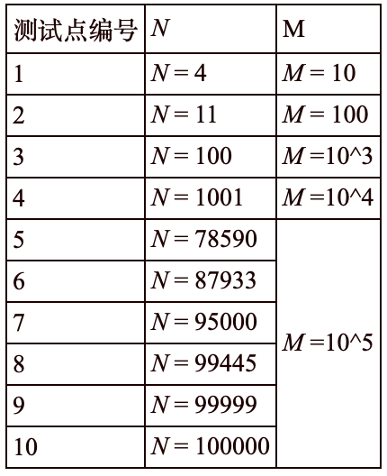

【样例说明】
在初始条件下，不高兴会将位置1和3的纸牌排好顺序。对于排列 (1,2,3) 和 (3,2,1)，他将排列成 (1,2,3)，没头脑不需要操作；对于排列 (1,3,2) 和 (2,3,1)，他将排列成 (1,3,2) ，没头脑需要交换一次；对于排列 (2,1,3) 和 (3,1,2)，他将排列成 (2,1,3)，没头脑需要交换一次。因此没头脑所花的时间期望为 (0*2+1*2+1*2)/6=2/3；方差为 ( (0-2/3)^2*2+(1-2/3)^2*2+(1-2/3)^2*2 )/6=2/9。
在进行了第一次修改之后，不高兴会只对位置 1 排序，这和没有排序的效果一样；第二次修改之后，他会对位置 1,2 排序；最后一次修改之后，他会对位置 1,2,3 排序，这样没头脑完全不用参与排序工作。可据此求出对应情况下没头脑排序时间的期望。
【评分标准】（comet 暂不支持部分分）
如果选手的前两行正确，其余行出现错误，可以得到40%的分数。
如果选手的前两行出现错误，其余行正确，可以得到50%的分数。
如果选手的所有行输出完全正确，可以得到100%的分数。
其余情况选手不得分。
【数据规模】

 Comet OJ
Comet OJ